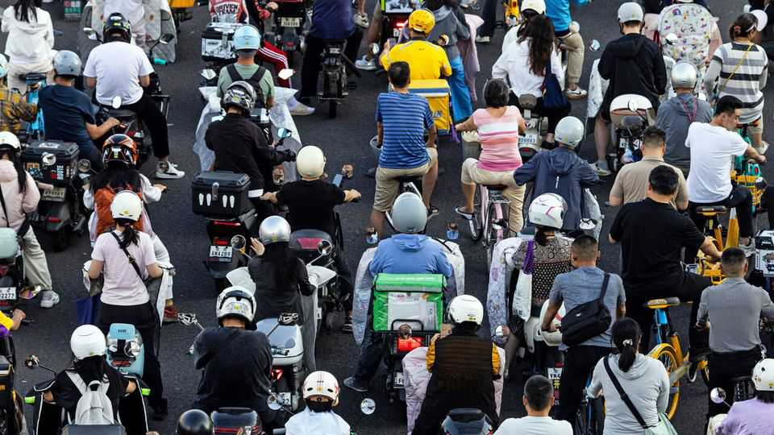
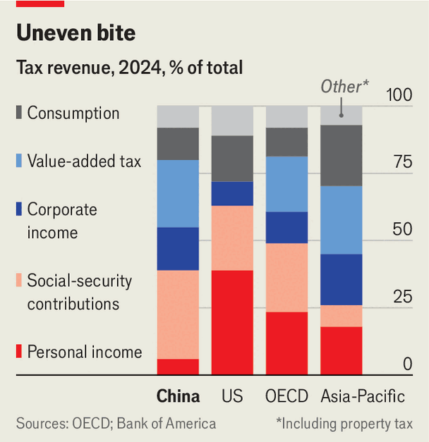

China should be loosening budgetary policy. It’s doing the opposite
Its belt-tightening is good micro, but bad macro

Aug 27th 2026
THE WORLD is full of governments that should tighten their belts but won’t. China is an exception. Domestic spending is weak. Government-bond yields are falling. The curse of deflation could return. Under these conditions, its government should ease fiscal policy to stimulate demand. Even the IMF thinks so. Instead China is stumbling into austerity. According to figures released on August 21st, tax revenues rose by more than 13% in July, compared with a year earlier, the biggest jump in over three years. China’s budget deficit, broadly defined, also narrowed.
China is raising revenue not by increasing its tax rates but by repairing its tax net. Earlier this month the cities of Beijing and Hangzhou told residents they must pay income tax on money earned from offshore insurance products bought in Hong Kong, according to Caixin, a Chinese magazine. The report rattled shares in insurers such as Prudential and AIA, which make a lot of their money in the semi-autonomous city.
This was only the latest instalment in a lengthy saga. Last year China began sending tax notices to mainlanders who may have made money trading stocks in Hong Kong or America. In July the authorities also issued new rules bringing offshore trusts more firmly into the tax net. These moves exploit a successful multilateral initiative (they still exist), called the Common Reporting Standard, which allows tax authorities in different jurisdictions to share information with each other.
China’s government has long viewed offshore assets as a tax dodge—or, worse, a hedge against Communist Party misrule. That makes them a tempting tax target. But the state’s recent efforts to raise revenue have gone further, extending deep into the domestic economy. According to Bank of America, at least 80 listed firms received demands for back taxes in the first half of this year, almost as many as in the whole of 2025.
In June, for example, local authorities told Heilongjiang Agriculture to pay 1.4bn yuan ($208m). The company had wrongly claimed a tax break on land leased to family farms outside the firm. The business, better known as Beidahuang (which translates as “Great Northern Wilderness”), is no offshore capitalist-roader. Its assets include vast tracts of black soil in China’s northernmost province. It is also controlled by the state. Indeed, one of its owners is the Ministry of Finance.
As well as policing the misuse of tax breaks, China has begun to remove some of them. From next year exports of high-energy batteries will no longer qualify for rebates on value-added tax. Solar cells, industrial glass, ceramics and certain chemicals also lost eligibility in April. The aim seems to be twofold: to raise some money and to force some consolidation in industries suffering from overcapacity.
China has also started to broaden its peculiar consumption tax. The levy applies to only 15 kinds of goods, including petrol, tobacco and alcohol. It is a little “outdated”, says Winnie Wu of Bank of America. “If you smoke, you pay tax, but you don’t need to pay tax when you buy a private jet.” In July China announced new taxes on lithium-ion batteries and solar cells. It is also considering a tax on sugary drinks, such as the milk tea beloved of younger Chinese. No sign yet of a tax on jets.

Many of these tax tweaks make sense, from a microeconomic perspective. “Sin” taxes can encourage healthier behaviour. Broader tax bases are better. The fuller taxation of offshore earnings will lift the income tax’s paltry contribution to state coffers (see chart). And pruning export rebates could ease trade tensions and force a shake-out in oversupplied industries.
But the timing of this belt-tightening is unfortunate. Many economists have been calling for bold fiscal stimulus to help the economy recover from the property slump. One idea is a big increase in rural pensions. Instead the government seems spooked by the erosion of its revenues over the past few years. The best that can be hoped for is that the increased taxes will fall primarily on people who would otherwise have saved the money.
China’s government is cautious about taking on additional fiscal obligations that will only grow as the population ages. To balance the economy, it will instead rely on a modernised tax system and the old-fashioned stoicism of the rural poor. Eat bitterness, tax sweetness. ■